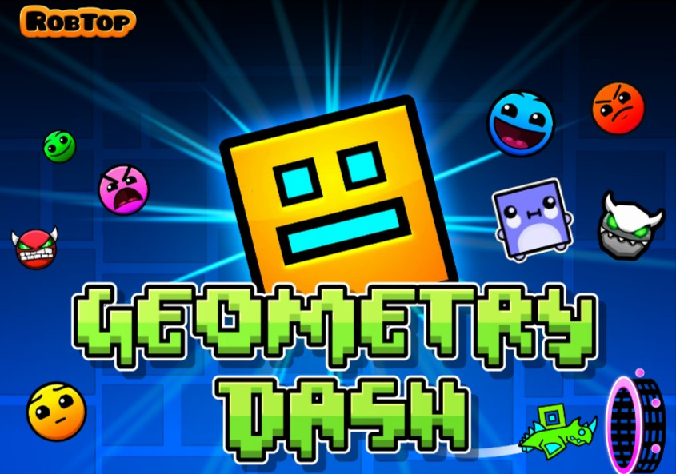
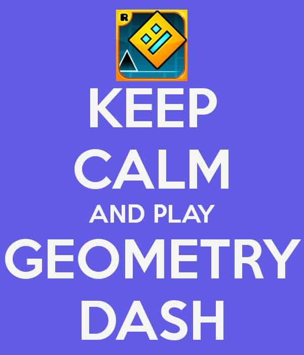

Story of Geometry Dash
Back in 2015, I used to be a 10-year-old girl (born in August 3rd, 2005) with just an iPad, and right after installing the game of Geometry Dash, I was impressed with its graphics. My journey began right from the first level, Stereo Madness. Geometry Dash became a huge part of my life, supplemented by lots of memories of creating levels and exploring all its features.
The deeper I went into Geometry Dash, the more the game appreciated, and the more happiness it brought into my life. I didn't have any social media until I found out about Discord in 2017, but I was not strong in English, so I rarely used the comment sections though the game. During this time I used to draw Geometry Dash stuff.
I looked up to people like Alkali and Viprin, talents of the community in Geometry Dash, who managed to create incredible levels that enriched the game. I learned that any level could be conquered if one had enough practice. Am I right? Instead of hacking the game does not make you good at game. Just practice because practice makes perfect.
I was not able to beat demon levels before the discovery of daily challenges, especially demons like Clubstep and Theory of Everything 2. However, by my third year in high school, my skills had become very sharp. I progressed with Geometry Dash from an iPad, through a mobile phone, to even a PC—the final device—when I purchased the game on Steam. It is been now 10 years since I played this game but not very good at demons yet. My hardest is Parabox by matty2003 and looking forward to beat Space Invaders soon too. Plus, I always enjoy the daily level, always active on game, and the featured levels every single time. Geometry Dash holds a special place in my heart. Geometry Dash has became my favourite hobby all of time. I've always been amazed when my classmates play it too, sharing in the joy and excitement that the game brings <3 :)
In 2023, I finally joined the Geometry Dash community server in 2023. Until then, I didn't have a phone number, but after growing up a little, I was able to get into the server. Quite some time has passed since I moved to Canada, and my English is already pretty good, so communicating with the community wouldn't be much of an issue now. Community engagement was not that easy in the first instance, especially from a mobile device. Before the 2.2 release, it had been very difficult to keep up with the main chat in English. However, it is always great to join in the conversation when fewer people are talking about various topics. I'm often active in the community when it comes to discussions regarding levels like Deadlocked and Theory of Everything from RobTop's main levels, and game news and updates. It amazes me to see some of the fantastic artwork shared by the community. Really nice community built around Geometry Dash by the developers; I'm truly proud to be a part of it like them.
